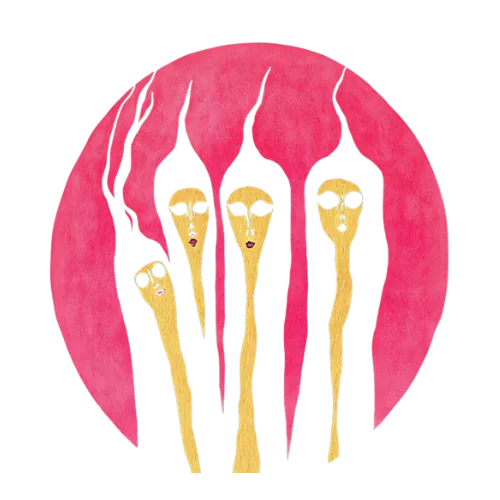
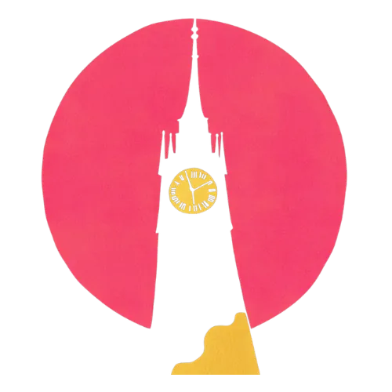
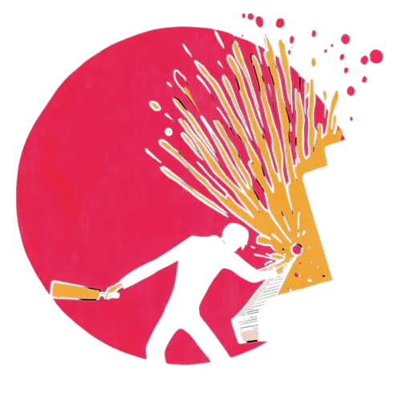
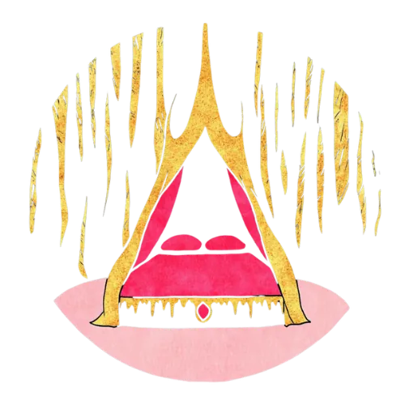
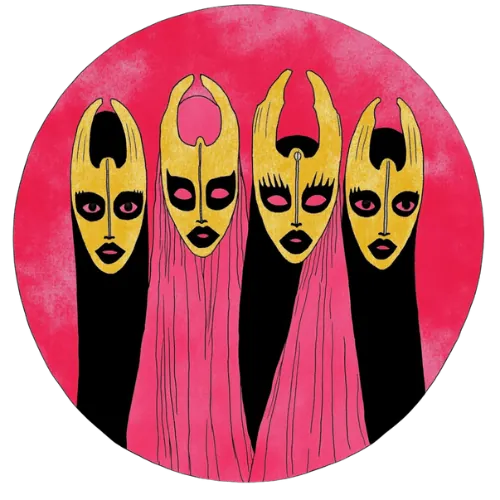

Archive
Time Capsule
Artifacts from our older, underground projects
In the world of underground parties, we’ve been curating interactive events for more than a decade. Our older endeavors range across installation and performance art, custom online experiences, theater, and live-action role-playing.
Below are selected works and a few of the artifacts from our older, underground experiences.

The Basement
Four lost souls make their way through a strange world in a branching, psychedelic trip through time and space.

Fielding’s Hollow
An intense live-action role-playing event for 16 players, set in a remote New England town during the Gilded Age. Not for the faint of heart.

Date That Man
A wholesome late-night dating show culminating in a denouement of wanton physical destruction.
Jitsi Party
A customizable, multi-room house party video app used by multiple communities to connect people during COVID. Designed, coded, and deployed from scratch.

Installations
We transformed an A-frame cabin into a sensual red lounge haunted by the ghost of a scorned woman, a basement into a monochromatic green room serving buttered toast, a pavilion in the woods into a medieval king’s matrimonial bed.

Alchemical Cabaret
A variety show with game and improv elements, inspired by the alchemical magnum opus.
Words from the audience
“A complete whirlwind and some of the best LARP I’ve ever done.”
“I was terrified, but it was exactly what I wanted.”
“I did Black Out, one of the consistently best rated horror experiences in the world. [The Basement] was better.”
“I felt that [Fielding’s Hollow] was truly miraculous, like reading a very excellent novel.”
“[The Basement] was an outpouring of creativity and inspiration, a totally unique, immersive experience, and a means for me to push myself outside of my own comfort zone in an environment where I felt safe and supported.”
“The Basement experience blew away Sleep No More.”